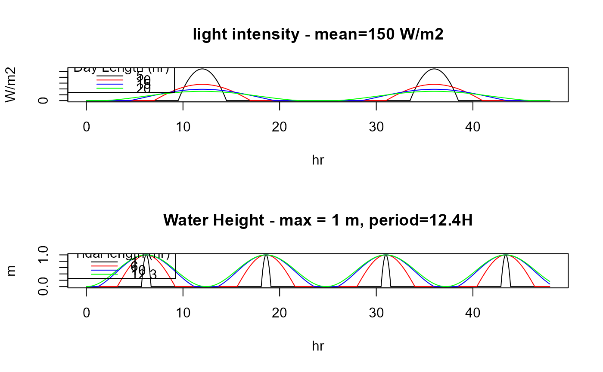

TempSEDfunctions.Rdtrunc_function returns a function that estimates variations within a certain period and that has a specific length within this period (input argument duration). The returned function can be used to estimate the value at any time (in seconds).
For instance, it can be used to estimate:
* light intensity variations within a day (periodicity 24 hours - daylength varies)
* water height over a tidal cycle (periodicity 12,4 hours - inundation period varies)
trunc_function (period = 86400, duration = period/2, offset = 0, trunc = 0,
average = 1, maximum = NA)periodicity of the function, in [s].
mean and maximum function-value, only one of those should be specified.
seconds during which function is positive; the default is half of the time.
minimum value below the function should be truncated.
time offset, in [s].
trunc_function creates a periodic sinusoidal function with a give periodicity, and where the fraction of time that the function is nonzero can be specified. For instance to generate light within a day or within a year.
A function that needs to be called with a time argument
par(mfrow = c(2,1))
# Light variations within a day
DL5 <- trunc_function(period = 86400,
duration = 5*3600,
average = 150)
DL10 <- trunc_function(period = 86400,
duration = 10*3600,
average = 150)
DL15 <- trunc_function(period = 86400,
duration = 15*3600,
average = 150)
DL20 <- trunc_function(period = 86400,
duration = 20*3600,
average = 150)
time <- seq(from = 1, to = 2*24*3600, by = 180)
plot(time/3600, DL5(time),
type = "l", xlab = "hr",
main = "light intensity - mean=150 W/m2", ylab = "W/m2")
lines(time/3600, DL10(time), col = "red")
lines(time/3600, DL15(time), col = "blue")
lines(time/3600, DL20(time), col = "green")
legend("topleft",
col = c("black", "red", "blue", "green"), lty = 1,
title = "Day Length (hr)", legend = c(5, 10, 15, 20))
# Tidal variations
T1 <- trunc_function(period = 12.4*3600,
duration = 1*3600,
maximum = 1)
T6 <- trunc_function(period = 12.4*3600,
duration = 6*3600,
maximum = 1)
T10 <- trunc_function(period = 12.4*3600,
duration = 10*3600,
maximum = 1)
T12.3 <- trunc_function(period = 12.4*3600,
duration = 12.3*3600,
maximum = 1)
plot(time/3600, T1(time),
type = "l", xlab = "hr", ylab = "m",
main = "Water Height - max = 1 m, period=12.4H")
lines(time/3600, T6(time), col = "red")
lines(time/3600, T10(time), col = "blue")
lines(time/3600, T12.3(time), col = "green")
legend("topleft", col = c("black", "red", "blue", "green"),
lty = 1, title = "Tidal length (hr)", legend = c(1, 6, 10, 12.3))
